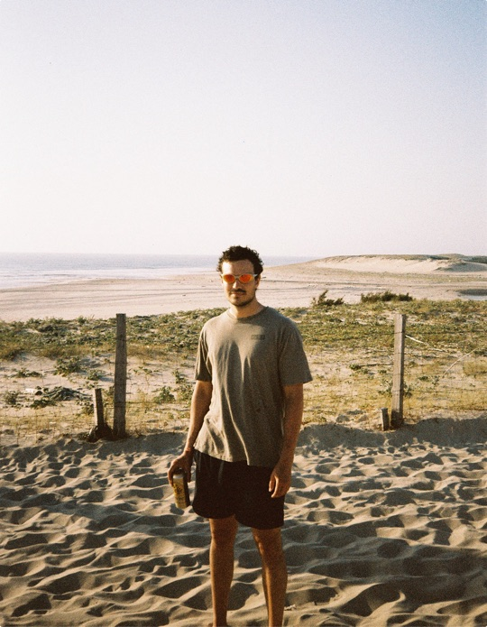

hey i’m Sam
i design and
build things like
One Year
making things for
humans
like myself
*
*
*
using technology as a tool
*
*
*
*
not a life-substitute.
X
L
I

pull a cord to open · push a slat to peek
close camera